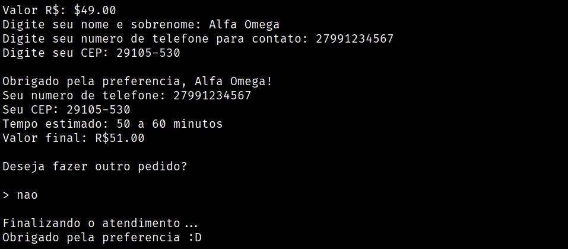
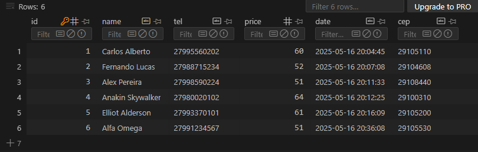
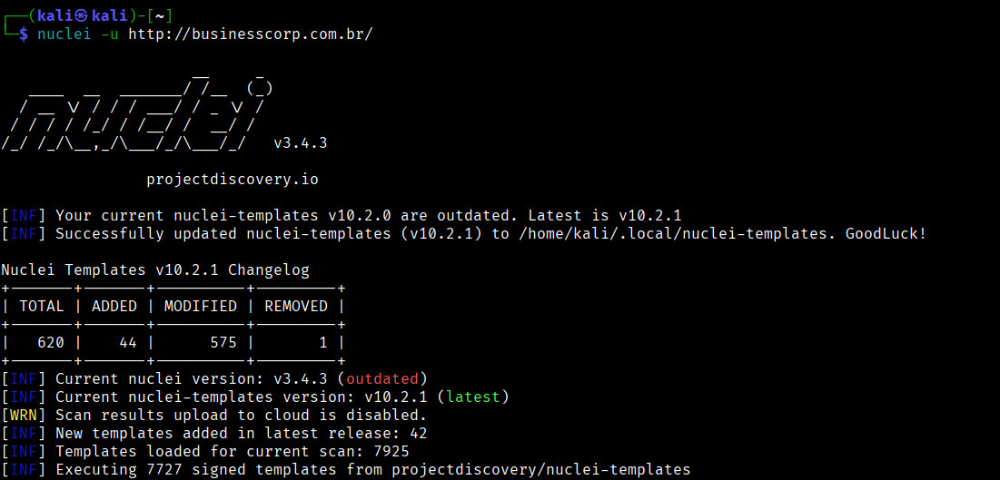
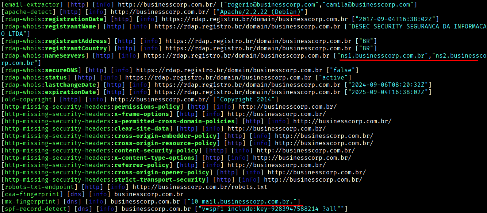
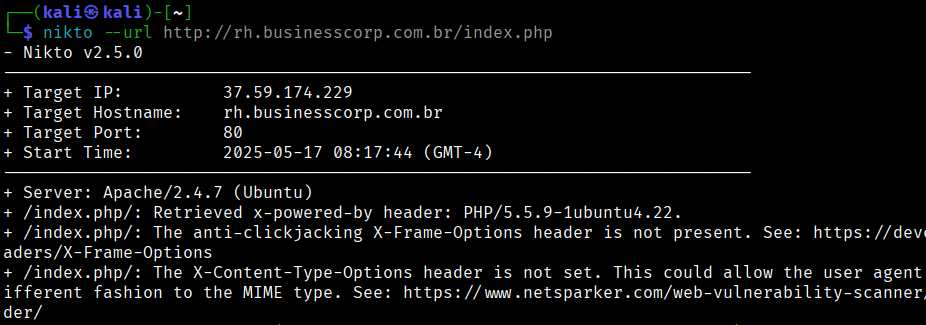
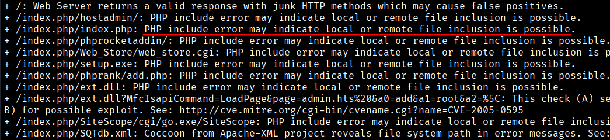

Planejamento e Gestão com Inteligência Artificial
Como sistemas inteligentes podem facilitar e melhorar no planejamento e gestão de empresas?
A IA permite que empresas analisem grandes volumes de dados para identificar padrões, prever
tendências e tomar decisões mais informadas. Ferramentas de IA podem realizar análises
preditivas, otimizando processos como gestão de estoque, precificação e alocação de recursos.
Por exemplo, empresas de logística utilizam IA para otimizar rotas de entrega, considerando
fatores como tráfego e condições climáticas, resultando em economia de combustível e tempo.
Além disso, a IA auxilia na previsão de demanda, permitindo ajustes proativos
na cadeia de suprimentos.
Uso de Chatbots no Atendimento ao Cliente
Temos os Chatbots, por exemplo, eles são programas que simulam conversas humanas,
oferecendo atendimento ao cliente 24 horas por dia, 7 dias por semana. Eles respondem
rapidamente a perguntas frequentes, processam pedidos e resolvem problemas simples,
liberando os atendentes humanos para questões mais complexas.
Hoje em dia, grande parte
do atendimento ao cliente é feito por Chatbots e aplicativos ou sites que facilitam a
vida do cliente. Mas, você já se perguntou como um Chatbot funciona? É um tipo de programa
simples, de certa forma, ele pergunta algo e você tem opções de respostas, assim te guiando
até conseguir o que deseja. Criamos um para exemplo de demonstração:
Veja que ele faz perguntas simples, onde o cliente pode responder com 1 ou 2, sim ou não. Esse é um dos tipos de chatbot mais simples, mas ainda é muito utilizado, ele consegue ser útil e funcional para o que se propõe.
Aqui vemos que ele calcula e grava o preço, nome, telefone e CEP (Ele também pode gravar a data). E pra onde vão esses dados? Temos a resposta! Na maioria das vezes, esses dados são armazenados no que chamamos de "banco de dados":

Os dados são fundamentais para todos os sistemas, tanto nos antigos quanto nos modernos.
Quando pressionamos qualquer tecla em nossos teclados, estamos enviando dados de entrada
que são processados pelo dispositivo, seja um computador, celular ou qualquer outro.
O banco de dados armazena os dados dos clientes para que futuramente, caso eles voltem a pedir,
já serão reconhecidos. Pode ser usado também para analisar estatísticas, auxiliar em
pesquisas na empresa e muito mais. Você pode também analisar o nosso código por completo no
Github e ver como o nosso Chatbot foi escrito.
Empresas de telecomunicações implementaram Chatbots para lidar com
solicitações, como emissão de segunda via de contas e verificação de saldo, resultando
em uma redução significativa no volume de chamadas para os call centers. Os benefícios do Chatbot são:
-
Disponibilidade contínua - Clientes podem obter assistência a qualquer momento.
Padronização - Respostas consistentes melhoram a experiência do cliente.
Redução de custos - Automatizar atendimentos diminui a necessidade de uma grande equipe de suporte.
Mas não se enganem, Chatbots não são IAs, são coisas completamente diferentes! Eles podem tentar simular conversas com humanos, mas não há aprendizado e nem muito menos a complexidade de uma IA. Mas, IAs podem sim ser integradas em Chatbots.
Análise de Currículos com IA
Entrando ainda mais no assunto de IAs, existem plataformas de recrutamento, como a Gupy , que utilizam IA para automatizar a triagem de currículos. A IA analisa dados dos candidatos, como experiências anteriores e habilidades, cruzando essas informações com os requisitos das vagas para identificar os perfis mais adequados. Suas vantagens são:
-
Agilidade: Redução do tempo de recrutamento.
Imparcialidade: Minimiza vieses inconscientes na seleção.
Eficiência: Foco nos candidatos com maior aderência às vagas.
Esse assunto é meio polêmico, porque quais seriam os critérios definidos pela IA para julgar os candidatos? E se tiver erros? Isso gera muitas discussões, pois muitas pessoas são contra e não apoiam, e, de fato, deve ser discutido.
Automação na Segurança da Informação
A segurança da informação se beneficia da IA por meio da detecção proativa de ameaças e da análise de vulnerabilidades. Sistemas baseados em IA monitoram redes em tempo real, identificando comportamentos anômalos e potenciais ataques cibernéticos. Existem também milhares de ferramentas que podem automatizar tarefas em cibersegurança, uma delas, por exemplo, é o Nuclei. Ele é uma ferramenta de código aberto utilizada para escanear possíveis vulnerabilidades, fazer varreduras rápidas e coleta de informação em aplicações web, redes e outros serviços. Exemplo abaixo:
Aqui iniciamos o Nuclei para escanear uma URL.
Ele não encontrou as vulnerabilidades em si, mas conseguiu fazer uma boa coleta de informações de endereço IP, Whois, subdomínios, e-mails, versões de aplicações, etc. Temos também o Nikto, que é uma ferramenta parecida, só que focada em aplicações web. Veja a demonstração abaixo:
Iniciamos o Nikto para escanear a URL escolhida, ele já mostra o endereço IP do servidor e a porta alvo.

E dessa vez ele de fato achou uma possível vulnerabilidade! Lembrando que esses testes
foram feitos em ambientes controlados, são laboratórios abertos para testes de invasão e
não apoiamos esse tipo de prática fora dos ambientes de teste.
Existem outras ferramentas mais sofisticadas e complexas, como o Cobalt Strike, que é uma
plataforma que simula ataques avançados e adversários sofisticados. Temos também o OpenVAS,
que é uma plataforma de análise de vulnerabilidades. Ele é código aberto, usado para realizar
varreduras em redes e sistemas, auxilia equipes de segurança a detectar e corrigir falhas.
E o que podemos tirar de tudo isso?
A integração de novas tecnologias e automações nas operações empresariais proporciona vantagens competitivas significativas. Desde o início no planejamento estratégico até o atendimento ao cliente e a segurança da informação, oferece ferramentas poderosas para otimizar processos, reduzir custos e riscos e melhorar a experiência geral. À medida que a tecnologia avança, espera-se que sua aplicação nas empresas se torne ainda mais abrangente e essencial.